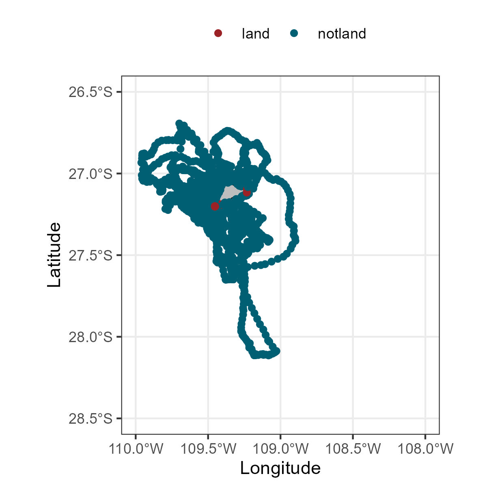
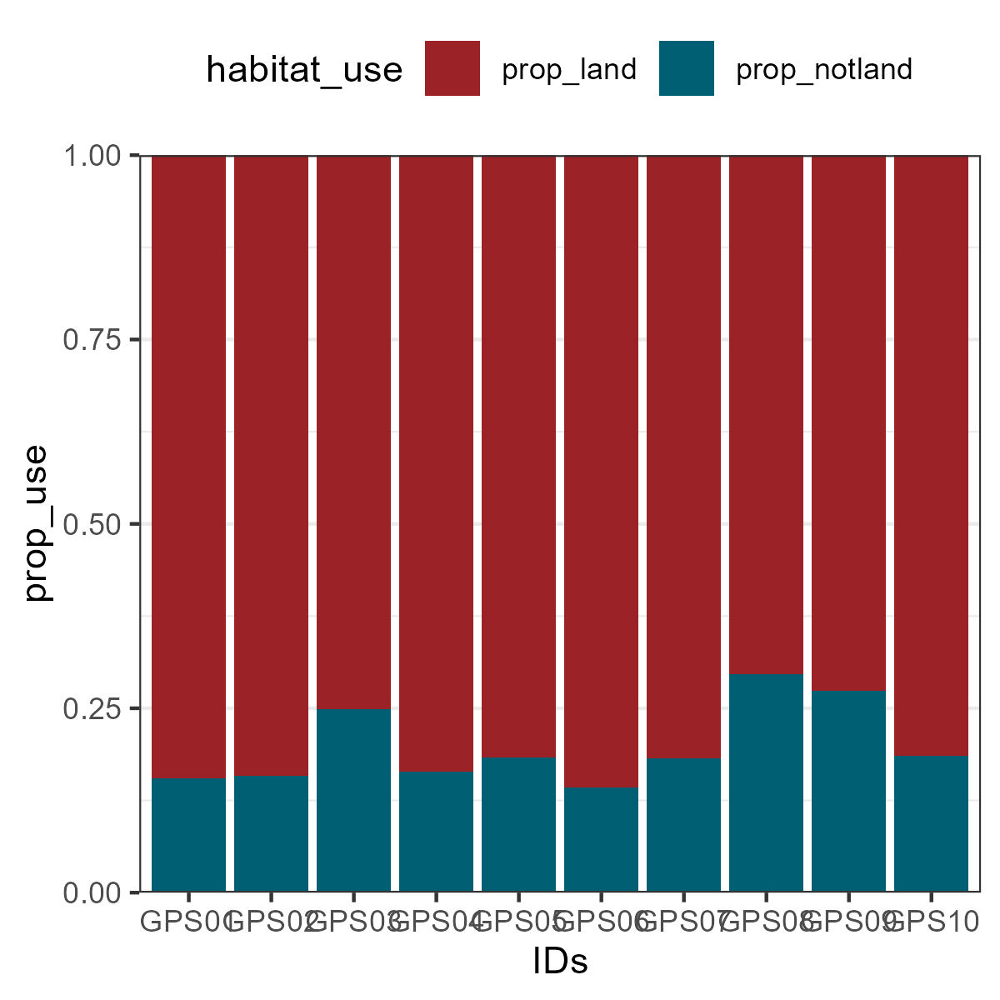

#devtools::install_github("MiriamLL/sula")Habitat use
r
biologging
Y2022
How to assign habitat use to animal locations.
Intro
This post is about how to classify locations on your tracking data based on an polygon with geographical information.
This is useful for example when you want to know:
- If the animal is using a specific habitats, and
- To calculate the percentage of use of a specific habitat
See examples on the recommended literature at the bottom of this post.
In this post we will classify tracking locations as land vs not land.
Data
To do this exercise, load data from the package ‘sula’.
For accessing the data, you need to have the package installed.
To install:
library(sula)The data is from 10 tracked individuals.
my_locs<-(GPS_raw)Check how many locations I have per individual
library(tidyverse)my_locs %>%
drop_na(IDs)%>%
group_by(IDs)%>%
tally()Points
To transform your GPS locations to spatial data, use the functions from the package sp.
It would turn your data frame into a SpatialPointsDataFrame.
my_locs <- as.data.frame(my_locs)
my_points <-my_locs
sp::coordinates(my_points) <- ~Longitude + Latitude
sp::proj4string(my_points) = sp::CRS("+init=epsg:4326")Polygon
For the polygon, you can download shapefiles according to your interest and area of study.
Some sources of country polygons are:
- DIVA-GIS
But there are many shapefile sources per country,
- For Chile: several exammples are summarized here
- For Mexico: IDEA Infraestructura de Datos Espaciales Abiertos
- For Germany: BSH-GeoSeaPortal
… just to mention a few.
Because the tracking data from the example was collected in Chile, we will use the country shapefile of Chile downloaded from the DIVA-GIS portal, or from the package geodata.
my_polygon<-read_sf(file.path(gisdirectory,'CHL_adm0.shp'))Over
The function checks which of the points (my_locations) fall inside the polygon (my_polygon).
Be cautious, the points and the polygon should be at the same CRS.
# added in 2025
check_locations_in_polygon <- function(my_locations, my_polygon) {
# Ensure both inputs are sf objects
locations <- sf::st_as_sf(my_locations)
polygon <- sf::st_as_sf(my_polygon)
# Make sure they use the same CRS
if (sf::st_crs(locations) != sf::st_crs(polygon)) {
stop("CRS of locations and polygon do not match.")
}
# Perform spatial intersection
location_over <- sapply(
sf::st_intersects(locations, polygon),
function(z) if (length(z) == 0) NA_integer_ else z[1]
)
return(location_over)
}The function over will return a data frame with the information where the points and the polygon intersect.
Landornot_over<- check_locations_in_polygon(my_points, my_polygon)We can add this information back to our locations to know which of the locations fall inside the territorial land limits or not.
my_locs$landornot <- Landornot_overTo make it easier to remember you can replace Chile and 0 for the data available in your polygon.
my_locs$landornot[is.na(my_locs$landornot)] <- 0my_locs<-my_locs %>%
mutate(landornot=
case_when(
landornot == 0 ~ 'notland',
landornot != 0 ~ 'land',
TRUE ~ "U"))You can also export this data frame to check in a GIS program.
write_csv(my_locs,file =paste0(here("1Data"),'/my_locs.csv'))Percentages 🥧
Now using functions from the package tidyverse you can quantify the numer of locations that the animal was at land or not.
Habitatuse<-my_locs %>%
drop_na(IDs)%>%
group_by(IDs,landornot)%>%
count()%>%
pivot_wider(names_from = landornot, values_from = n)… and also calculate the percentage of time using one habitat or the other.
Habitatuse$total<-Habitatuse$land+Habitatuse$notland
Habitatuse$prop_land<-Habitatuse$land*100/Habitatuse$total
Habitatuse$prop_notland<-Habitatuse$notland*100/Habitatuse$total
Habitatuse$prop<-Habitatuse$prop_land+Habitatuse$prop_notlandPlot
Map
Plotting the data will help to confirm if the classification is correct.
class(my_polygon)ggplot()+
geom_sf(data=my_polygon, color='black',fill='grey')+
geom_point(data=my_locs, aes(x=Longitude,y=Latitude,color=landornot))+
scale_color_manual(values=c('#9b2226','#005f73'))+
theme_bw()+
theme(legend.position = 'top')+
labs(x = "Longitude", y="Latitude",color='')+
xlim(-110, -108)+
ylim(-28.5, -26.5)
To customize your plot, you can change many arguments, for example to change the theme_bw here are other options.
Do not forget to adjust your xlim and ylim to your coordinates.
Percentages
You can also plot the percentage of habitat use per individual.
To do this, preparing the information in a long format will make it easier to plot.
Habitatuse_prop<-Habitatuse %>%
pivot_longer(c(prop_land,prop_notland),
names_to = "habitat_use",
values_to = "prop_use" )ggplot(Habitatuse_prop, aes(fill=habitat_use, y=prop_use, x=IDs)) +
geom_bar(position="fill", stat="identity")+
scale_fill_manual(values=c('#9b2226','#005f73'))+
theme_bw()+
theme(legend.position = 'top')+
scale_y_continuous(expand = c(0,0)) 
Recommended literature
Function over:
Geometry overlaysExamples in the literature:
Quantify habitats visited
Individual specialization in an ecological winner
Tracking positions inside the protected areas
If you can think on another sources of geographical data please do not hesitate to write me to include it on the list.
For more details or suggestions, or just to say hi you can also always write me an email